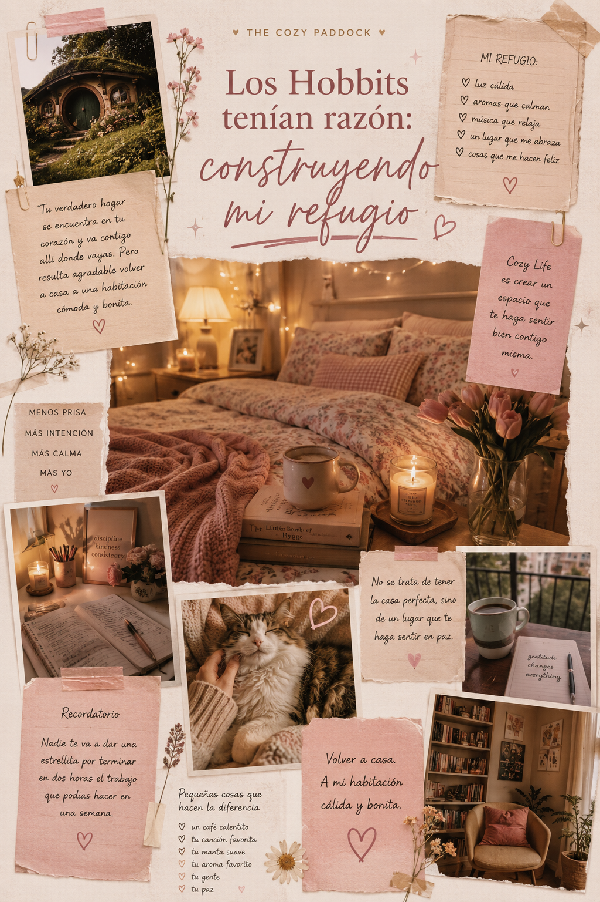

Los Hobbits tenían razón: construyendo mi refugio
Desde muy temprana edad descubrí algo interesante sobre mi personalidad: soy extremadamente competitiva. Lo peor que me puede pasar es que alguien me diga que no soy capaz de hacer algo. Y es ahí cuando se activa todo aquello que tenía en modo pausa.
Durante mi época de colegio y universidad realmente no fui una persona competitiva. Más bien fui una estudiante mediocre. Hoy, con mi edad y conociendo mi verdadero potencial, debo aceptar que no di lo mejor de mí mientras estudiaba.
Sin embargo, cuando empecé mi vida laboral en serio, descubrí algo más: era extremadamente exigente conmigo misma. Me encantaba hacer las cosas bien y ser la mejor en lo que hacía. También era muy dura al evaluarme. Y, aunque he mejorado mucho, debo reconocer que la baja autoestima fue una compañera de viaje durante muchos años.
Pero si algo me caracteriza es que siempre me esfuerzo. No puedo decir que no sé decir que no, porque la verdad es que muchas veces ni siquiera me preguntan. Soy yo quien se ofrece, quien se compromete y quien termina llenándose de responsabilidades. Y, con ellas, llegan el estrés, la ansiedad y esa voz interna que susurra:
"No vas a alcanzar."
El despertar de 2023
El año 2023 me cambió.
Literalmente fue un despertar.
Fue un "estoy viva, pero… ¿qué estoy haciendo con mi vida?".
Ese año pasé por un gran susto de salud. Dicen que, a veces, hay que verle la cara a la muerte para realmente cambiar. Y creo que eso fue exactamente lo que me pasó.
Cuando abrí los ojos y miré a mi alrededor, me di cuenta de que tenía que cambiar. Que la vida es una sola y que, pasara lo que pasara, tenía que aprender a disfrutarla.
Hasta ese momento simplemente vivía el día a día. No me preocupaba demasiado por mi entorno ni por la forma en que se desarrollaba mi existencia. Solo aceptaba lo que llegaba.
Mi habitación también estaba vacía
Lo primero que empecé a observar fue mi habitación.
Y, aunque tenía una cama doble y el mejor colchón del mercado, el espacio parecía no tener alma. Era una habitación sin personalidad. No había rastro de las cosas que me gustaban. Todo estaba guardado.
Debo admitir que mi manera de combatir el desorden había sido simple: no tener nada que desordenar.
Pero el resultado era un lugar frío, monótono y vacío.
Y mejor ni hablar del apartamento que comparto con mi hermana.
Los Hobbits tenían razón
En medio de esa búsqueda llegó a mis manos un libro: La sabiduría de la Comarca, de Noble Smith.
El autor utiliza el estilo de vida de los hobbits para reflexionar sobre cómo vivir una vida más larga y feliz. Y hubo una frase que me dejó pensando:
"Si estás leyendo este libro y estás cansado, déjalo ahora mismo y vete a la cama."
Me impresionó profundamente.
Yo era de esas personas capaces de levantarse a lavarse la cara solo para seguir leyendo.
Pero la frase que realmente me marcó fue otra:
"Tu verdadero hogar se encuentra en tu corazón y va contigo allí donde vayas. Pero resulta agradable volver a casa a una habitación cómoda y bonita."
Y algo hizo clic dentro de mí.
Descubriendo el Cozy Life
Esa frase me llevó a investigar. Empecé a ver vídeos sobre diferentes estilos de vida y a observar cómo vivían otras personas. Quería encontrar algo que me ayudara a sentirme mejor conmigo misma.
Y fue así como descubrí dos filosofías que me encantaron: el Cozy Life y el Slow Living.
El Cozy Life busca crear una vida acogedora y cálida, donde el entorno favorezca el bienestar emocional, la comodidad y la desconexión del caos exterior. No se trata únicamente de estética. Se trata de cómo te hace sentir tu hogar.
Tu espacio se convierte en un santuario. Un refugio donde recargas energías.
Luces cálidas, texturas suaves, aromas agradables y un orden funcional forman parte de esa sensación de calma y protección.
Por otro lado, el Slow Living propone una alternativa al ritmo frenético de la sociedad actual. Es una invitación a desacelerar, a priorizar la calidad sobre la cantidad y a vivir con más intención.
Ambas filosofías buscan el bienestar, pero desde enfoques distintos.
Construyendo mi refugio
Con el tiempo descubrí que, aunque me identifico con ambas ideas, mi corazón pertenece más al Cozy Life.
Porque, aunque deseo paz y tranquilidad, debo aceptar que me muevo demasiado rápido.
Así que decidí empezar por mi entorno.
Cambié la iluminación de mi habitación. Pasé de la luz fría a una luz cálida. Descubrí que incluso prefiero la luz suave de una pequeña lámpara iluminando un rincón.
Empecé a utilizar aromas para darme calma, música para relajarme y a ser más consciente de cómo quiero que luzca mi espacio.
Pero también he empezado a adoptar algunas ideas del Slow Living.
Estoy aprendiendo a no querer hacerlo todo más rápido de lo necesario.
Porque nadie me va a dar una estrellita por terminar en dos horas el trabajo que podía hacer tranquilamente en una semana.
Volver a casa
Lo importante es que empecé.
Y se nota.
Porque ya no se trata solo de mi habitación.
También se trata de mí.
De cómo me veo.
Del tiempo que dedico a cuidarme.
De lo que quiero proyectar.
Se trata de disfrutar mi café mientras mi gata se tira a mis pies para que la peine.
De sentarme a trabajar sin estar pensando constantemente en qué tan rápido podré terminar.
Y al final del día, volver a casa.
A mi habitación cálida y bonita.
About The Cozy Paddock
The Cozy Paddock es un espacio donde la Fórmula 1 se vive desde una perspectiva más suave y femenina.
Creado para chicas que quieren entender, disfrutar y experimentar el deporte de una forma simple, acogedora y bonita.
The Cozy Paddock is a space where Formula 1 meets a softer, more feminine perspective.
Created for girls who want to understand, enjoy, and experience the sport in a simple, cozy, and beautiful way.
Autoras

Mery Ramirez

Sheyla Franco

Mayra Torreblanca